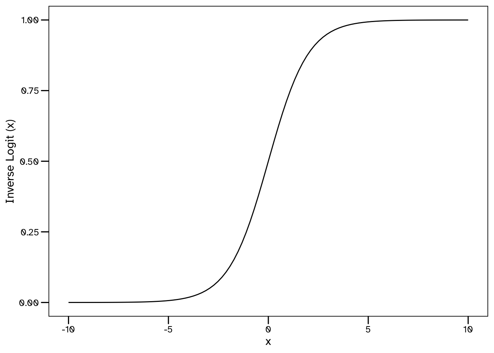
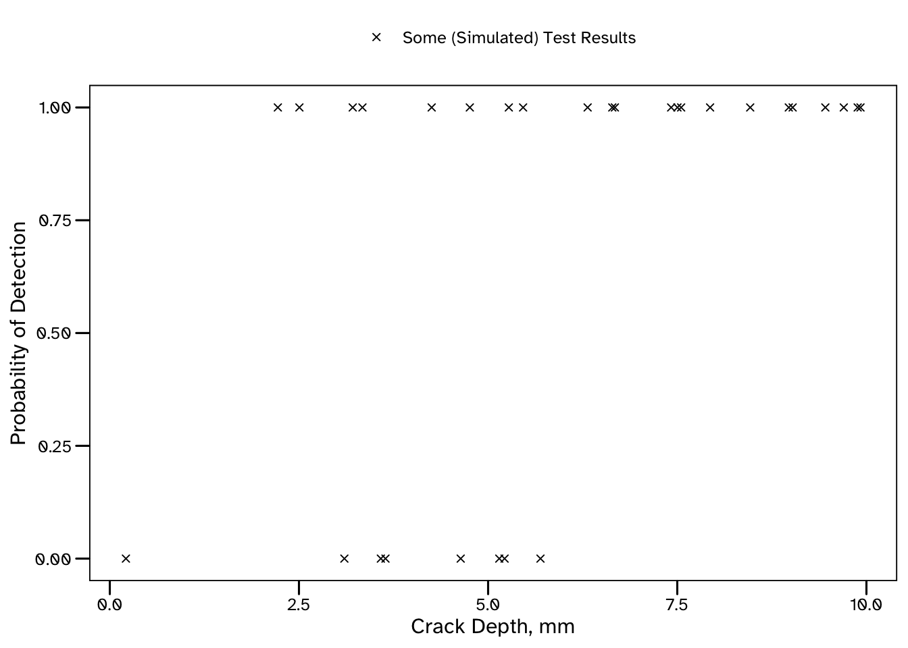
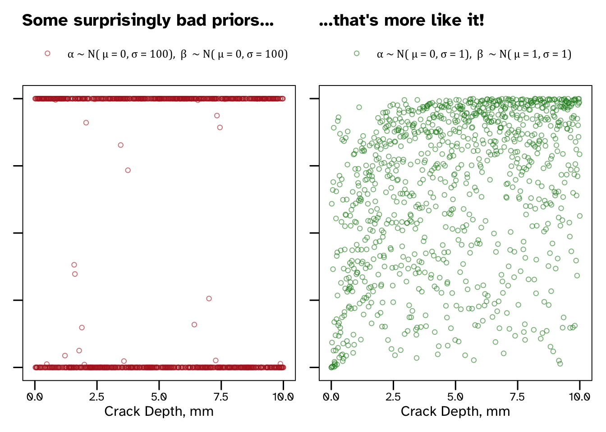

TLDR
Logistic regression is a popular machine learning model. One application of it in an engineering context is quantifying the effectiveness of inspection technologies at detecting damage. This post describes the additional information provided by a Bayesian application of logistic regression (and how it can be implemented using the Stan probabilistic programming language). Finally, I’ve also included some recommendations for making sense of priors.
Introductions
So there are a couple of key topics discussed here: Logistic Regression, and Bayesian Statistics. Before jumping straight into the example application, I’ve provided some very brief introductions below.
Bayesian Inference
At a very high level, Bayesian models quantify (aleatory and epistemic) uncertainty, so that our predictions and decisions take into account the ways in which our knowledge is limited or imperfect. We specify a statistical model, and identify probabilistic estimates for the parameters using a family of sampling algorithms known as Markov Chain Monte Carlo (MCMC). My preferred software for writing a fitting Bayesian models is Stan. If you are not yet familiar with Bayesian statistics, then I imagine you won’t be fully satisfied with that 3 sentence summary, so I will put together a separate post on the merits and challenges of applied Bayesian inference, which will include much more detail.
Logistic Regression
Logistic regression is used to estimate the probability of a binary outcome, such as Pass or Fail (though it can be extended for > 2 outcomes). This is achieved by transforming a standard regression using the logit function, shown below. The term in the brackets may be familiar to gamblers as it is how odds are calculated from probabilities. You may see logit and log-odds used exchangeably for this reason.
\[ Logit (x) = \log\Bigg({\frac{x}{1 - x}}\Bigg) \]
Since the logit function transformed data from a probability scale, the inverse logit function transforms data to a probability scale. Therefore, as shown in the below plot, it’s values range from 0 to 1, and this feature is very useful when we are interested the probability of Pass/Fail type outcomes.
\[ Inverse\;Logit (x) = \frac{1}{1 + \exp(-x)} \]

Before moving on, some terminology that you may find when reading about logistic regression elsewhere:
- When a linear regression is combined with a re-scaling function such as this, it is known as a Generalised Linear Model (GLM).
- The re-scaling (in this case, the logit) function is known as a link function in this context.
- Logistic regression is a Bernoulli-Logit GLM.
You may be familiar with libraries that automate the fitting of logistic regression models, either in Python (via sklearn):
from sklearn.linear_model import LogisticRegression
model = LogisticRegression()
model.fit(X = dataset['input_variables'], y = dataset['predictions'])…or in R:
model_fit <- glm(formula = preditions ~ input_variables,
data = dataset, family = binomial(link = 'logit'))Example Application: Probability of Detection
To demonstrate how a Bayesian logistic regression model can be fit (and utilised), I’ve included an example from one of my papers. Engineers make use of data from inspections to understand the condition of structures. Modern inspection methods, whether remote, autonomous or manual application of sensor technologies, are very good. They are generally evaluated in terms of the accuracy and reliability with which they size damage. Engineers never receive perfect information from an inspection, such as:
- There is a crack of exact length
30 mmand exact depth5 mmat this exact location, or - There is definitely no damage at this location.
For various reasons, the information we receive from inspections is imperfect and this is something that engineers need to deal with. As a result, providers of inspection services are requested to provide some measure of how good their product is. This typically includes some measure of how accurately damage is sized and how reliable an outcome (detection or no detection) is.
This example will consider trials of an inspection tool looking for damage of varying size, to fit a model that will predict the probability of detection for any size of damage. Since various forms of damage can initiate in structures, each requiring inspection methods that are suitable, let’s avoid ambiguity and imagine we are only looking for cracks.

Test Data
For the purposes of this example we will simulate some data. Let’s imagine we have introduced some cracks (of known size) into some test specimens and then arranged for some blind trials to test whether an inspection technology is able to detect them.
set.seed(1008)
N <- 30; lower <- 0; upper <- 10; alpha_true <- -1; beta_true <- 1
depth <- runif(n = N, min = lower, max = upper)
PoD_1D <- function(depth, alpha_1D, beta_1D){
PoD <- exp(alpha_1D + beta_1D * log(depth)) / (1 + exp(alpha_1D + beta_1D * log(depth)))
return (PoD)
}
pod_df <- tibble(depth = depth, det = double(length = N))
for (i in seq(from = 1, to = nrow(pod_df), by = 1)) {
pod_df$det[i] = rbernoulli(n = 1,
p = PoD_1D(depth = pod_df$depth[i],
alpha_1D = alpha_true,
beta_1D = beta_true))
}The above code is used to create 30 crack sizes (depths) between 0 and 10 mm. We then use a log-odds model to back calculate a probability of detection for each. This is based on some fixed values for \(\alpha\) and \(\beta\). In a real trial, these would not be known, but since we are inventing the data we can see how successful our model ends up being in estimating these values.
The below plot shows the size of each crack, and whether or not it was detected (in our simulation). The smallest crack that was detected was 2.22 mm deep, and the largest undetected crack was 5.69 mm deep. Even so, it’s already clear that larger cracks are more likely to be detected than smaller cracks, though that’s just about all we can say at this stage.
After fitting our model, we will be able to predict the probability of detection for a crack of any size.

Stan is a probabilistic programming language. In a future post I will explain why it has been my preferred software for statistical inference throughout my PhD.
The below is a simple Stan program to fit a Bayesian Probability of Detection (PoD) model:
library(cmdstanr)
PoD_model <- cmdstan_model(stan_file = "PoD_model.stan")
PoD_model$format()data {
int<lower=0> N; // Defining the number of defects in the test dataset
array[N] int<lower=0, upper=1> det; // A variable that describes whether each defect was detected [1]or not [0]
vector<lower=0>[N] depth; // A variable that describes the corresponding depth of each defect
int<lower=0> K; // Defining the number of probabilistic predictions required from the model
vector<lower=0>[K] depth_pred;
}
parameters {
// The (unobserved) model parameters that we want to recover
real alpha;
real beta;
}
model {
// A logistic regression model relating the defect depth to whether it will be detected
det ~ bernoulli_logit(alpha + beta * log(depth));
// Prior models for the unobserved parameters
alpha ~ normal(0, 1);
beta ~ normal(1, 1);
}
generated quantities {
// Using the fitted model for probabilistic prediction.
// K posterior predictive distributions will be estimated for a corresponding crack depth
vector[K] postpred_pr;
for (k in 1 : K) {
postpred_pr[k] = inv_logit(alpha + beta * log(depth_pred[k]));
}
}The generated quantities block will be used to make predictions for the K values of depth_pred that we provide.
K <- 50; depth_pred <- seq(from = lower, to = upper, length.out = K)The above code generates 50 evenly spaced values, which we will eventually combine in a plot. In some instances we may have specific values that we want to generate probabilistic predictions for, and this can be achieved in the same way.
Fitting the model
Data can be pre-processed in any language for which a Stan interface has been developed. This includes, R, Python, and Julia. In this example we will use R and the accompanying package, cmdstanr.
Our Stan model is expecting data for three variables: N, det, depth, K and depth_pred and cmdstanr requires this in the form of a list.
Results
Once we have our data, and are happy with our model, we can set off the Markov chains. There are plenty of opportunities to control the way that the Stan algorithm will run, but I won’t include that here, rather we will mostly stick with the default arguments in cmdstanr.
PoD_fit <- PoD_model$sample(data = list(N = N, det = pod_df$det, depth = pod_df$depth,
K = K, depth_pred = depth_pred), seed = 2408)Note:I’ve not included any detail here on the checks we need to do on our samples. There are some common challenges associated with MCMC methods, each with plenty of associated guidance on how to diagnose and resolve them. For now, let’s assume everything has gone to plan.
Now, there are a few options for extracting samples from a stanfit object such as PoD_samples, including cmdstanr::as_draws(). However, these usually require a little post-processing to get them into a tidy format. There is a function in my DomDF R package for this, which we can use to create a tidy output that specifies the iteration, parameter value and chain associated with each data point:
library(DomDF)
PoD_samples <- PoD_fit |> DomDF::tidy_mcmc_draws()
head(x = PoD_samples, n = 5)# A tibble: 5 × 4
Parameter Chain Iteration value
<chr> <int> <int> <dbl>
1 lp__ 1 1 -15.5
2 lp__ 1 2 -15.2
3 lp__ 1 3 -15.8
4 lp__ 1 4 -16.6
5 lp__ 1 5 -16.1We have sampled from a 2-dimensional posterior distribution of the unobserved parameters in the model: \(\alpha\) and \(\beta\). Below is a density plot of their corresponding marginal distributions based on the 1000 samples collected from each of the 4 Markov chains that have been run.
So our estimates are beginning to converge on the values that were used to generate the data, but this plot also shows that there is still plenty of uncertainty in the results. Unlike many alternative approaches, Bayesian models account for the statistical uncertainty associated with our limited dataset - remember that we are estimating these values from 30 trials. These results describe the possible values of \(\alpha\) and \(\beta\) in our model that are consistent with the limited available evidence. If more data was available, we could expect the uncertainty in our results to decrease. I think there are some great reasons to keep track of this statistical (sometimes called epistemic) uncertainty - a primary example being that we should be interested in how confident our predictive models are in their own results! …but I’ll leave it at that for now, and try to stay on topic.
How do we know what do these estimates of \(\alpha\) and \(\beta\) mean for the PoD (what we are ultimately interested in)? We can check this using the posterior predictive distributions that we have (thanks to the generated quantities block of the Stan program).
One thing to note from these results is that the model is able to make much more confident predictions for larger crack sizes. The increased uncertainty associated with shallow cracks reflects the lack of data available in this region - this could be useful information for a decision maker!
There are only 3 trials in our dataset considering cracks shallower than 3 mm (and only 1 for crack depths < 2 mm). If we needed to make predictions for shallow cracks, this analysis could be extended to quantify the value of future tests in this region.
Final Thought: Where Did Those Priors Come From and Are They Any Good?
There are many approaches for specifying prior models in Bayesian statistics. Weakly informative and MaxEnt priors are advocated by various authors. Unfortunately, Flat Priors are sometimes proposed too, particularly (but not exclusively) in older books. A flat prior is a wide distribution - in the extreme this would be a uniform distribution across all real numbers, but in practice distribution functions with very large variance parameters are sometimes used. In either case, a very large range prior of credible outcomes for our parameters is introduced the model. This may sound innocent enough, and in many cases could be harmless.
Flat priors have the appeal of describing a state of complete uncertainty, which we may believe we are in before seeing any data - but is this really the case?

Suppose you are using Bayesian methods to model the speed of some athletes. Even before seeing any data, there is some information that we can build into the model. For instance, we can discount negative speeds. We also wouldn’t need to know anything about the athletes to know that they would not be travelling faster than the speed of light. This may sound facetious, but flat priors are implying that we should treat all outcomes as equally likely. In fact, there are some cases where flat priors cause models to require large amounts of data to make good predictions (meaning we are failing to take advantage of Bayesian statistics ability to work with limited data).
In this example, we would probably just want to constrain outcomes to the range of metres per second, but the amount of information we choose to include is ultimately a modelling choice. Another helpful feature of Bayesian models is that the priors are part of the model, and so must be made explicit - fully visible and ready to be scrutinised.
A common challenge, which was evident in the above PoD example, is lacking an intuitive understanding of the meaning of our model parameters. Here \(\alpha\) and \(\beta\) required prior models, but I don’t think there is an obvious way to relate their values to the result we were interested in. They are linear regression parameters on a log-odds scale, but this is then transformed into a probability scale using the logit function.
This problem can be addressed using a process known as Prior Predictive Simulation, which I was first introduced to in Richard McElreath’s fantastic book. This involves evaluating the predictions that our model would make, based only on the information in our priors. Relating our predictions to our parameters provides a clearer understanding of the implications of our priors.
Back to our PoD parameters - both \(\alpha\) and \(\beta\) can take positive or negative values, but I could not immediately tell you a sensible range for them. Based on our lack of intuition it may be tempting to use a variance for both, right? Well, before making that decision, we can always simulate some predictions from these priors. The below code is creating a data frame of prior predictions for the PoD (PoD_pr) for many possible crack sizes.
(Thank you to Jiun for your kind message that helped me tidy up the below)
\[ \alpha \sim N(\mu_{\alpha}, \sigma_{\alpha}) \]
\[ \beta \sim N(\mu_{\beta}, \sigma_{\beta}) \]
# A tibble: 6 × 2
depth PoD_pr
<dbl> <dbl>
1 0 0
2 0.0100 0.00000780
3 0.0200 0.00366
4 0.0300 0.0452
5 0.0400 0.0413
6 0.0501 0.00619 And we can visualise the information contained within our priors for a couple of different cases.

Our wide, supposedly non-informative priors result in some pretty useless predictions. I’ve suggested some more sensible priors that suggest that larger cracks are more likely to be detected than small cracks, without overly constraining our outcome (see that there is still prior credible that very small cracks are detected reliably and that very large cracks are often missed).
Why did our predictions end up looking like this?
Borrowing from McElreath’s explanation, it’s because \(\alpha\) and \(\beta\) are linear regression parameters on a log-odds (logit) scale. Since we are estimating a PoD we end up transforming out predictions onto a probability scale. Flat priors for our parameters imply that extreme values of log-odds are credible. All that prior credibility of values < - 3 and > 3 ends up getting concentrated at probabilities near 0 and 1. I think this is a really good example of flat priors containing a lot more information than they appear to.
I’ll end by directing you towards some additional (generally non-technical) discussion of choosing priors, written by the Stan development team (link). It provides a definition of weakly informative priors, some words of warning against flat priors and more general detail than this humble footnote.
Citation
@online{difrancesco2020,
author = {Domenic Di Francesco},
title = {Bayesian {Logistic} {Regression} with {Stan}},
date = {20-02-15},
url = {https://allyourbayes.com/posts/Logistic_Bayes},
langid = {en}
}